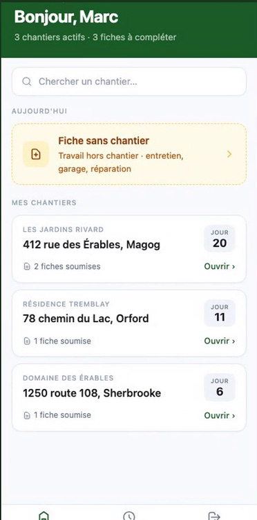
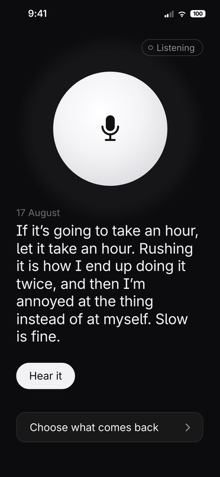
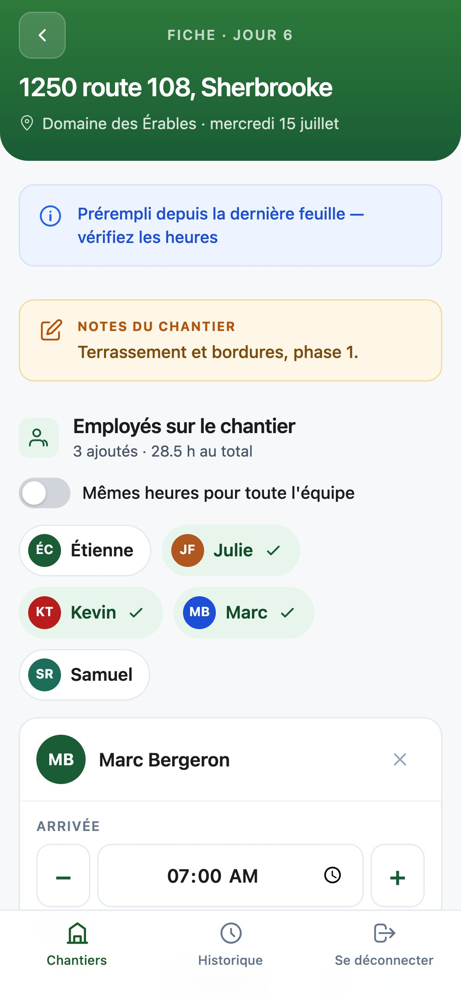
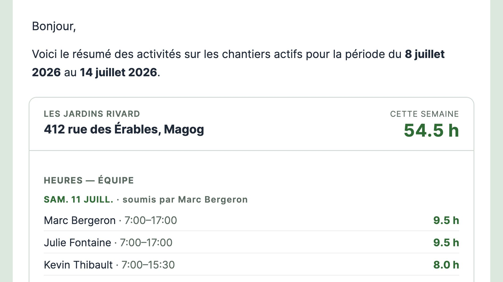
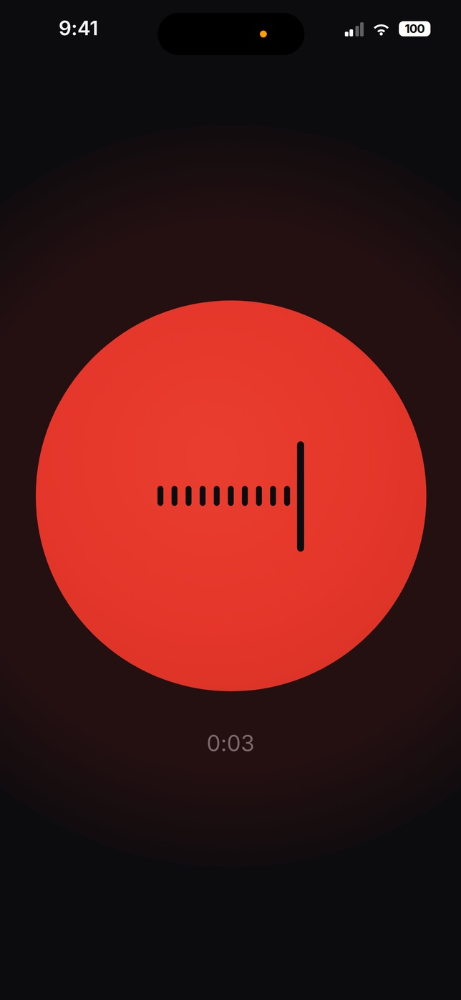
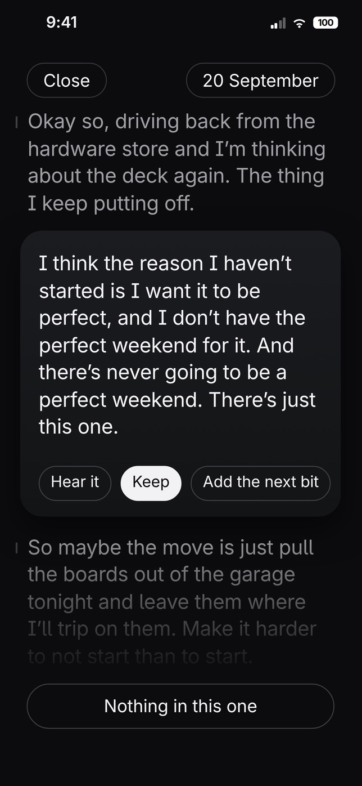

I’m Corey Bailey. Keep your team organized and your clients in the loop.
For a crew in the field, that means knowing what got done today and who was on which job, and telling a client where things stand without a phone call. When that lives on paper and in texts, hours get billed wrong. I build simple tools that fix that.
Eastern Townships, Quebec. Ten years in the trades, with UX design alongside.


ChantierLog
Second Pass
What I offer
Tools built around how your business works, not a generic app you have to work around.
- Your paper forms, as an app. Time sheets, daily reports and job checklists, turned into a simple app your crew fills in on their phone. Hours bill right, and the week doesn’t get pieced together from memory.
- Your tools talking to each other. I connect the software you already use, so information is entered once and goes where it needs to.
- The repeat work, done on its own. Invoices, reminders, follow-ups and client updates that go out by themselves, so clients know where things stand without calling to ask.
- The week at a glance. One place to see hours, jobs and what’s still outstanding, so the day is planned and nothing slips.
- Straight advice on AI. Where it would actually save you time, and where it wouldn’t. I’ve built AI features into my own app and cut them when they didn’t hold up, so you’ll get a straight answer.
ChantierLog
chantierlog.caA job-site reporting app. At the end of every day I filled in a paper sheet, pen in hand, and it was a real pain. So I built the app I wanted: easier for crew leads to fill in, and easier for the office to receive and file for billing. It was piloted at the landscaping and excavation company I work for.
On the job site
- Before
- A paper sheet at the end of the day, pen in hand.
- After
- Crew leads file the day from their phones, offline where there’s no signal.
Monday morning
- Before
- Someone in the office chasing hours.
- After
- The week lands in the office’s inbox on its own, and nobody has to chase anyone for it.
| Before | After | |
|---|---|---|
| On the job site | A paper sheet at the end of the day, pen in hand. | Crew leads file the day from their phones, offline where there’s no signal. |
| Monday morning | Someone in the office chasing hours. | The week lands in the office’s inbox on its own, and nobody has to chase anyone for it. |


Second Pass
secondpass.appAn iPhone app I designed and built. I’d been scrolling reels for far too long when a video came up saying, more or less, go do something with your life. It didn’t say anything groundbreaking, and that’s when I realized we already have this knowledge. We just need to be reminded of it. So I built an app that reminds you in your own words: you talk into it, and later it plays them back to you. It’s in testing with its first users.
It’s where I learned to cut what doesn’t work, even after it’s built.
What I cut, and why
- Cut
- Two AI features I’d already built
- Why
- They failed on the recordings that mattered most.
- Cut
- A feature for long recordings
- Why
- I measured my own recordings. They were short, so it wasn’t needed.
- Cut
- Typing
- Why
- I never used it.
| What I cut | Why |
|---|---|
| Two AI features I’d already built | They failed on the recordings that mattered most. |
| A feature for long recordings | I measured my own recordings. They were short, so it wasn’t needed. |
| Typing | I never used it. |


How I work
Step by step
Most clients can picture the finished yard but not how it gets there, so I walk them through it step by step and answer what comes up along the way. Software is no different.
Scope it down
I’d rather scope something down and have it get used than ship something impressive nobody opens.
One person
I do the design and make the product decisions. The engineering runs through AI tools I direct, so the design and the build come from the same person.
About me
I’ve worked in the trades for ten years, operating heavy equipment and dealing with clients every day. When I have a clear objective for the day, it reflects in the work and in how the whole project goes. Everything runs smoother, and everybody works together better.
I want to build tools that give a team that kind of clarity: they handle the day-to-day of running a business without adding to the noise. I think keeping a clear mind is essential to a good work environment.
A calmer team, and clients who know what’s going on.
Book a free walk-through
I come by, or we talk on a call if you’re not nearby. I’ll ask where things get lost: with your clients, with your team, between the job and the office. Then I’ll ask to see how it’s done now, whether that’s a paper form, a group chat or a spreadsheet.
Within a few days you get one to three options in writing, each with what it would cost and how long it would take. No obligation. And if it isn’t worth building, I’ll tell you that too.
If you go ahead, the first step is a clickable prototype, a small paid job, so you can see how it will work, and try it, before anything gets built.